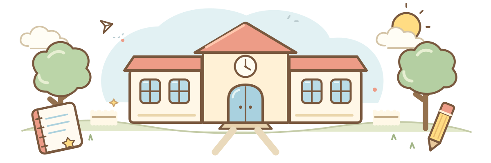

九九スターバトル
いっしょに まなぼう。きょうも できた！を ひとつ。
はじめての チャレンジへ！
メダルとキャラクターは、このブラウザーに ほぞんするよ。別の端末には 引きつがれないよ。
どの段を やってみる？
1 あそびかた
2 れんしゅうする 段
1つの段を えらんでね。
数字を おしてね
よく がんばったね！
新記録達成！- クリアタイム
- びょう
- もんだいの数
- まちがえた数
かくとくメダル
きみだけの きせかえ
カードを おすと、ためせるよ。ゲットした そうびは ずっと つかえるよ。
そうびは 見た目だけ。九九の つよさは かわらないよ。メダルは お金で かうものでは ありません。
いっしょに 九九で
やってみよう！
友だちと いっしょに、九九に チャレンジ。
せいかいするたび、きみの 星が ふえるよ。
あそびかたは かんたん！
- 1段を えらぶ
- 2友だちと つながる
- 3九九で 星ゲット！
ともだちの へやに 入る
番号を おしえてもらったら ここ！
れんしゅうする 段
習った段だけ、いくつでも えらべるよ。
あそびかた
↑ 2台で あそぶときは ここから！
先生へ・つかいかた
2台で遊ぶときは、1人が段・問題数を選んで「へやをつくる」、もう1人が6けたの部屋番号で参加します。両方の端末にインターネット接続が必要です。部屋の有効期限は2時間です。通信対戦のはやおしは、サーバーに正解が先に届いた人に星が入ります。正解後は約1秒表示して両端末が自動で次の問題の準備をし、3秒のカウントダウンで次の問題が始まります。「つぎへ」で早く進むこともできます。答えを見たときは、2人とも「つぎへ」を押してください。
1台で遊ぶ場合は、タブレットは横向きがおすすめです。「はやおし」は先に正解した児童に1点。「じっくり」は両者が正解するまで進まず、それぞれに1点が入ります。同点は引き分けです。誤答の減点はなく、1秒後に再回答できます。分からない問題は「こたえを見る」で確認できます。
名前の入力・アカウント登録は不要です。通信対戦では問題・得点・回答の判定を共有します。部屋の情報は2時間で期限切れとなり、新しい部屋を作る際に期限切れデータを削除します。部屋の参加操作には連続アクセスの制限を設けています。2人が参加した部屋には、別の端末からは参加できません。練習のクリアタイムは回答中の時間を合計します。正解後の自動進行や「つぎへ」を待つ時間は含めません。自己ベストはノーミス時のみ記録します。練習モードのメダル・装備・自己ベストはブラウザー内に保存し、ブラウザーのデータ削除や端末変更で引き継げません。通信対戦では選んだアバターのパーツ番号だけを相手と共有します。終了時に、間違えた問題を振り返れます。2台対戦では、PCの数字キーとEnterでも回答できます。
あおチーム
数字を おしてね
オレンジチーム
数字を おしてね
友だちと「ありがとう！」を つたえよう。
へやの番号
この番号を 友だちに つたえてね。
友だちと「ありがとう！」を つたえよう。